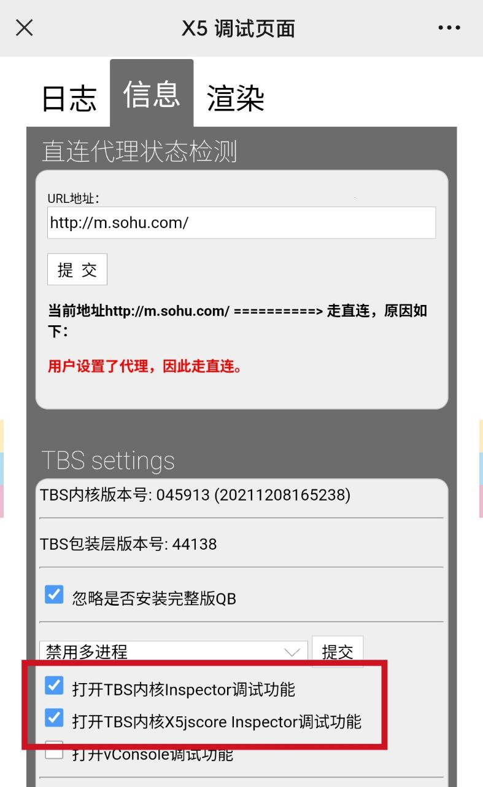
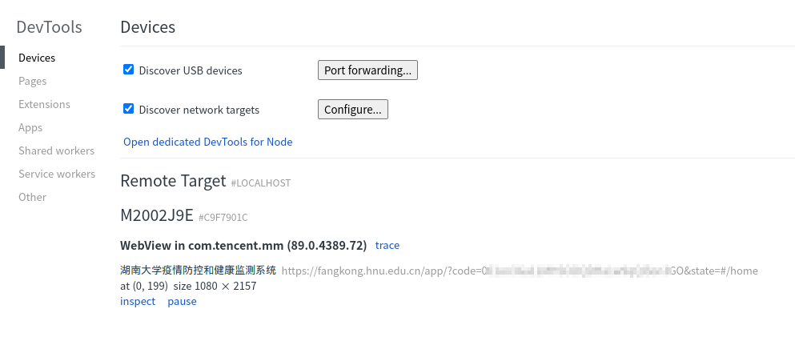
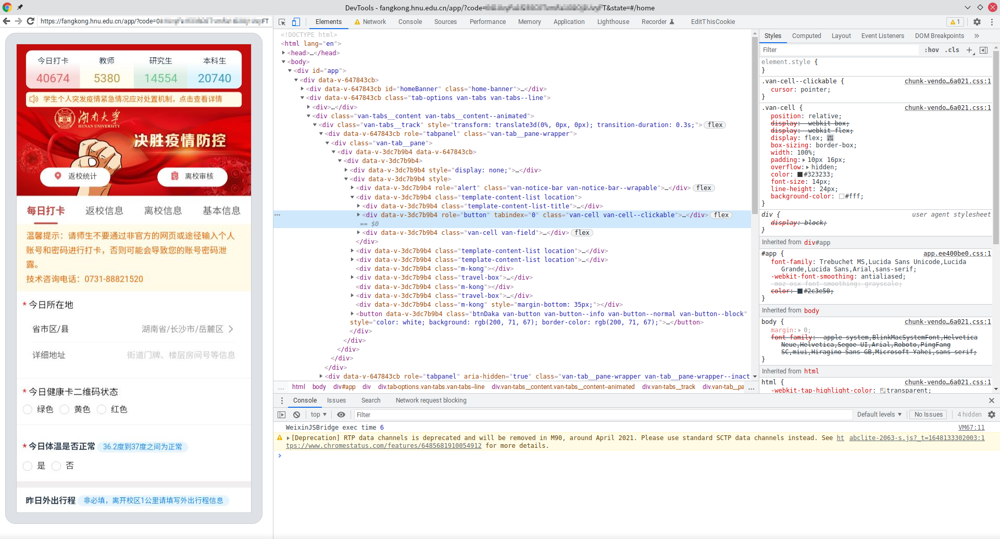
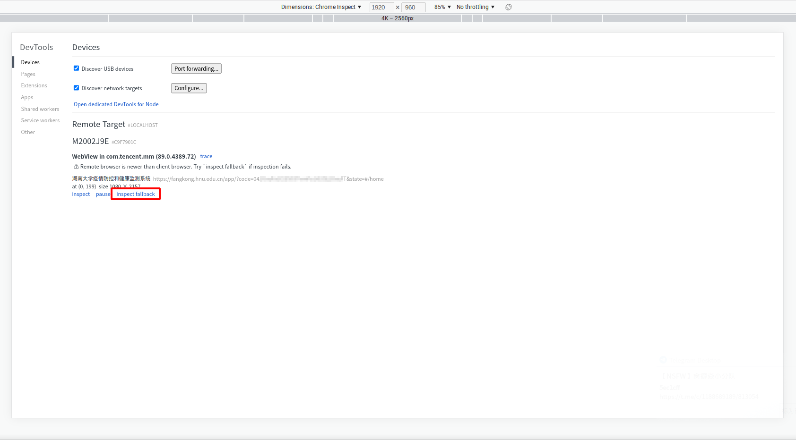
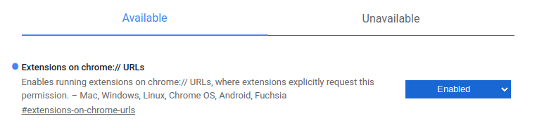
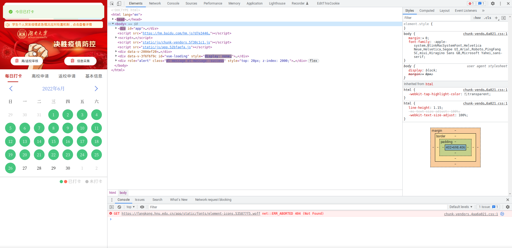
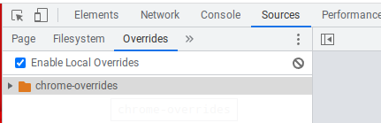
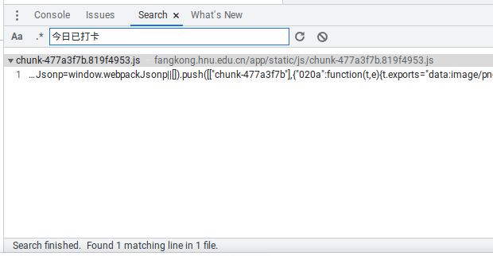
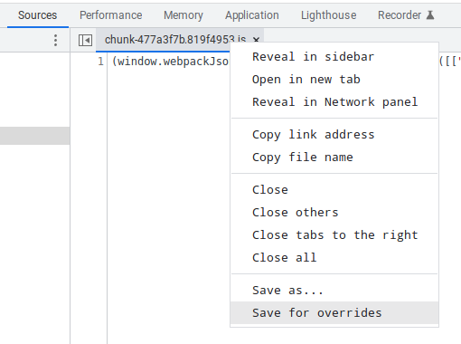
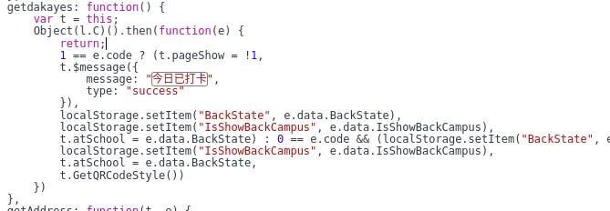

HNU 每日打卡脚本｜技术细节和实用技巧
秉持着「能让机器完成的事情，绝不人工操作」的原则，早在入学军训之时，我就萌生了使用脚本打卡的念头，并且顺利地将其实现。时至今日，脚本也算是经历了几次迭代，现将技术细节全部公开出来，与大家一起交流讨论
校方已经不再信任由帐号密码登录的会话，先前的打卡方式全部失效
初号机
初代打卡机采用了非常原始的实现方式，需要挂在 VPS 上定时运行，简单粗暴。纵观整个 web 登录打卡的过程，其实就只有 3 个步骤：
graph LR
获取验证码 --token--> 请求登录 --cookie--> 提交打卡
在 web 端不像在微信中那样可以通过 oauth 直接登录，网页首先会请求：
这个 API（可以点击试试），得到一个 Token，然后拿着这个 Token 再次请求：
得到验证码图片，由于验证码内容是纯数字，比较简单，直接使用 Tesseract 强行识别，也可以达到勉强能用的识别率（验证码错误 10 次左右登录成功）：
1 | import re |
二代机（GitHub Actions）
初代机虽然已经能实现每日自动打卡，但实在是太不优雅，甚至出现过由于 VPS 欠费导致打卡中断的情况，况且把这么每日打卡和「一些其它服务」挂在同一台服务器上也很不安全，于是决定改用 GitHub Actions 定时打卡
GitHub Actions 的配置非常简单，只需要增加一个配置文件，简单写几行 yml，确定 Actions 的触发方式即可：
1 | name: Auto Checkin |
简简单单 20 行，声明了 Action 的触发方式（line 3 - 5），环境配置（line 11 - 14）和工作流程（line 16 - 22），非常地简单明了。此外 Actions 运行在 GitHub 的高性能容器上，脚本的稳定性能得到很好的保障
除此之外，二代机使用了几层简单的全连接神经网络代替 Tesseract 完成验证码识别，准确率较一代机得到大幅提升，单张验证码四个数字全部识别正确的概率达到约 85%，具体实现可以参考我之前的 这篇文章
三代机（PyTorch）
如果说一代到二代机的改动让脚本质量有了一个质的飞跃，那么三代机就比较偏向于练手作了，仅仅是用 PyTorch 替代了原来 numpy 手撕的神经网络来做的验证码识别，并且上传到 GitHub 让大家方便 fork 而已：
神经网络的具体实现同样可以参考我的 这篇文章，这里就不再赘述
微信 WebView 抓包
- 此法需要准备好一台 Android 手机，电脑上安装 Chromium 内核的浏览器
基于 web 的打卡机被全面封杀之后，只能在微信中登录打卡，那么抓取微信网页中的数据包便成为了一项刚需，好在腾讯早就为我们留好了后门，只要在微信内置浏览器打开 http://debugx5.qq.com/ 这个链接，并在「信息」一栏中开启 inspector 功能即可轻松开启调试
如果报错找不到 x5 内核，可以先打开 http://debugmm.qq.com/?forcex5=true 即可切换到 x5 内核。
然后把手机开启 usb 调试并连接上电脑，在浏览器地址栏输入 chrome://inspect 打开远程调试工具，就可以看到在 Android 设备上打开的网页了：

此时点击「inspect」按钮，就能像我们平常使用 DevTools 那样，对网页进行调试啦～

还没结束！细心的你可能已经发现，手机和电脑上网页同步的速度非常慢，甚至根本加载不出来😰，因为默认的 inspect 调试方式是需要经过 Google 的服务器的，我们还需要对 chrome://inspect 这个网页本身做些手脚，才能将调试控制在本地进行
在 inspect 页按下 F12 以调试其本身，并切换 UA，修改其中 Chrome 的版本号为 0.0.0.0，可以看到下方多出了一个「inspect fallback」的选项，点击它，就可以轻松打开 DevTools 而不经过 Google 的服务器了

每次都打开 DevTools 切换 UA 还是有些麻烦，于是我做了一个小插件来把「inspect」按钮替换成「inspect fallback]，核心代码如下：
1 | !(function (origin) { |
在 chrome://flags 中开启「Extensions on chrome:// URLs」选项即可使用

小技巧：本地覆盖
我们在试图调试时，如果当天已经打卡，则会直接跳到日历页，给调试表单造成了很大的困扰。如果直接 block 掉查询请求，又会触发无限重试，把浏览器浓的非常卡顿。这个时候就可以巧妙利用本地覆写的技巧来避免被跳转

来到 Sources 一栏，在下方找到 Overrides 的选项，勾选 Enable Local Overrides 后选择一个文件夹备用：

按 Ctrl+Shift+F 打开搜索框，查找「今日已打卡」的提示信息，定位到对应的 js 文件：

然后右键标头，选择 Save for overrides 一项，这样一来下次再请求该脚本时将会直接用本地保存的这份 js 文件作为响应：

接下来在刚刚保存的这份 js 文件中搜索「今日已打卡」，找到一个回调函数，我们直接把它 return 掉，然后保存刷新：

此时便不会再跳转到日历页，可以愉快地调试啦～